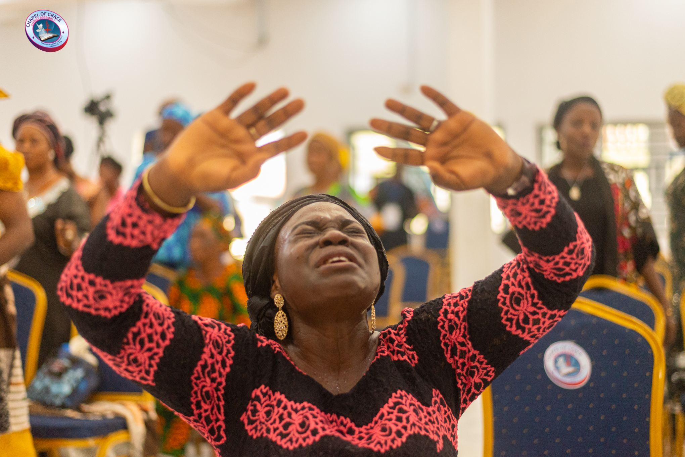

Your testimony
can strengthen
someone's faith.
Share what God has done in your life and encourage someone else through your story.
Chapel Of Grace / Why we remember
What is this about?
We believe that what God has done should not be forgotten.
This is a space to document the stories of God's faithfulness, the prayers He answered, the lives He changed and the moments that remind us that He is still at work.
Your testimony may be the encouragement someone else needs.

Your story matters
Sometimes the story God gave you is exactly what someone else needs to hear.
Your story, with all its doubts, turns, and quiet miracles, is a witness. When shared, it becomes a gift to someone walking a road you have already traveled.
Tell your storyGod is still working
God is still
writing stories.
Every testimony is a chapter in His greater story of redemption, and yours matters.
Chapel Of Grace / Find us
Locate us.
Visit us in Ibadan or Ado-Ekiti. Choose a location to view it on the map.